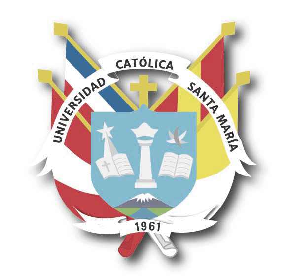

1. Fundamentos de Programación
Introducción a los lenguajes de programación, algoritmos y estructuras de datos.
Universidad Católica Santa María - Arequipa
El curso de Desarrollo de Aplicaciones está orientado a brindar conocimientos y habilidades para el diseño, implementación y despliegue de aplicaciones modernas, utilizando tecnologías actuales y buenas prácticas de ingeniería de software.
Introducción a los lenguajes de programación, algoritmos y estructuras de datos.
HTML, CSS, JavaScript, frameworks y herramientas para crear aplicaciones web interactivas.
Modelado, diseño y gestión de bases de datos relacionales y no relacionales.
Scrum, Kanban y otras metodologías para el desarrollo eficiente de proyectos.
Ing. Juan Pérez
Especialista en desarrollo de software y docente con amplia experiencia en el área.